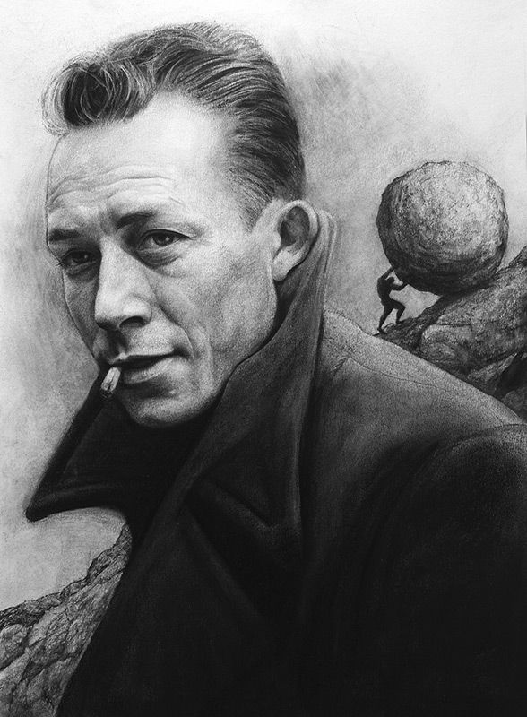

AN INDEPENDENT LITERARY HOUSE
Aurelis
Some words belong to a room. Others deserve a whole house. Discover stories, poetry, ideas, authors, and other written worlds.
Enter the LibraryA PLACE TO RETURN TO
A quiet place for thoughts that have nowhere else to go.
Write. Think. Remember.
A room for thoughts, stories, questions, and silence.
No rush. Nothing to prove. Just a little room to be.
A writer who looked deep into the human mind.
1821 — 1881

Dostoevsky explored guilt, freedom, faith, and suffering, looking deep into the contradictions that live within human beings. His characters rarely stand on one side of a question. They doubt, desire, regret, and search for something they cannot easily name.
What makes his work enduring is the rawness of those inner conflicts. His questions remain unsettling because they do not belong to his characters alone. They belong to anyone who has ever looked within and found more than one self staring back.
The man behind the questions.
Dostoevsky's writing often enters the most complicated parts of human nature. His characters question morality, freedom, faith, guilt, suffering, and what it means to be human.
What makes his work remarkable is that he rarely gives simple answers. Instead, he places people inside difficult choices and lets their contradictions speak for themselves.
His novels continue to feel relevant because the questions he explored are not limited to one era. They belong to anyone who has ever struggled to understand themselves or the people around them.
The deepest questions are often the ones we cannot answer for ourselves.
1883 — 1924
A writer who turned ordinary life into something strange.
Kafka explored the quiet unease of being human in a world that rarely explains itself. His writing turned alienation, anxiety, and ordinary uncertainty into something strangely familiar.
His characters often found themselves inside systems they could neither understand nor escape. Beneath the surrealism was a simple fear: that the world might continue moving, even when you no longer understand your place within it.
The man who made the ordinary feel strange.
Kafka's writing often explores isolation, anxiety, identity, and the feeling of being trapped inside a world that does not quite make sense.
What makes his work remarkable is the way he turns ordinary situations into something unsettling. His characters often face strange systems and circumstances that they cannot fully understand or escape.
His stories continue to feel relevant because they capture feelings of confusion, loneliness, and helplessness that can exist even in everyday life.
Sometimes the strangest prison is the world we have learned to call ordinary.
1913 — 1960
A writer who questioned meaning in an indifferent world.

Camus explored the silence between humanity's need for meaning and a universe that offered none. He faced that silence without comfort, asking what remains when certainty falls away.
For him, the absurd was not an ending. It was the moment we begin to live without guarantees, choosing our own meaning in a world that refuses to provide one.The man who faced the absurd.
Camus's writing often explores the tension between humanity's search for meaning and a world that does not provide clear answers.
What makes his work remarkable is that he did not simply accept the absurd. He explored how people could respond to it through freedom, awareness, and rebellion.
His ideas continue to matter because they ask a difficult question: how do we live meaningfully when the universe does not give us a ready-made meaning?
We must imagine ourselves creating meaning in a world that gives us none.
I enter the Quiet with respect.
I will leave room for thoughts, words, and silence.
What is written here, I will treat with care.
Choose how you wish to enter.
You can enter without creating an account.
A few choices, so this room can feel a little more like yours.
You can change these choices later. Nothing here is permanent.
Shape the room. Decide what Scribe carries with you.
Things you leave behind for Scribe to remember across conversations on this device.
Memory is stored locally in this browser. Don’t save passwords, private keys, or sensitive secrets.
Choose the atmosphere you want when you enter the Quiet.
These preferences shape how Scribe speaks with you.
Everything here currently lives in browser storage.
Personalization stays separate from the memory vault.
There is no right reason to be here.
You don't have to know exactly why.
THE PEOPLE WHO LEFT LIGHT BEHIND
People whose work left something behind.
1941 —
A storyteller who turned imagination, nature, and quiet human moments into worlds of wonder.
Hayao Miyazaki helped redefine Japanese animation through stories that brought imagination, nature, and deeply human experiences together.
His films created unforgettable worlds while exploring childhood, loneliness, courage, friendship, and our relationship with the natural world.
The storyteller who found wonder in the ordinary.
Hayao Miyazaki is one of the most influential figures in Japanese animation and a co-founder of Studio Ghibli. Through his films, he created worlds where imagination, nature, and everyday human life could exist together.
His stories include unforgettable worlds and characters from films such as My Neighbor Totoro, Princess Mononoke, Spirited Away, Howl's Moving Castle, and many others.
What makes his work distinctive is the way fantasy is connected with ordinary human experiences. Childhood, loneliness, courage, friendship, responsibility, and the wonder of simply being alive often sit at the heart of his stories.
Nature also plays an important role in his storytelling. Forests, oceans, spirits, animals, and landscapes are often more than backgrounds. They become living parts of the worlds his characters inhabit.
Miyazaki's legacy is therefore not only about animation. It is about showing how quiet moments, imagination, and human emotion can carry as much weight as spectacle.
Sometimes the most extraordinary worlds begin with an ordinary moment.
1922 — 2018
A creator who helped make superheroes feel human.
Stan Lee helped shape the voice of Marvel Comics and helped create and develop some of the most recognizable characters in comics.
His stories brought extraordinary powers together with ordinary human problems, making superheroes feel more relatable.
The man who helped make heroes feel human.
Stan Lee became one of the most recognizable figures in American comics, helping shape Marvel's Silver Age alongside artists and writers including Jack Kirby and Steve Ditko.
His work helped bring characters such as Spider-Man, the Fantastic Four, the Hulk, Thor and the X-Men to a broad audience. His stories often placed extraordinary characters inside recognizable human problems.
That combination became an important part of Marvel's voice: superheroes could be powerful while still being imperfect, worried, funny, conflicted, and deeply human.
Lee's legacy is therefore not only about individual heroes. It is also about helping establish a style of comic-book storytelling in which the people behind the powers mattered.
The mask may be extraordinary. The person underneath still has to live.
The creator who turned a pirate adventure into a world.
Eiichiro Oda created One Piece, building a vast world filled with adventure, friendship, dreams and freedom.
His storytelling connects seemingly small moments with a much larger world, giving his characters and their journeys a lasting sense of wonder.
A storyteller who built an entire world around the idea of freedom.
Eiichiro Oda is the creator of One Piece, one of the most influential manga series of its generation.
His world is enormous, but its heart remains simple: people chasing their dreams, protecting the people they care about, and refusing to give up their freedom.
What makes Oda's work remarkable is the way seemingly separate stories and characters can become part of something much larger.
Decades of storytelling have turned a fictional world into something that feels almost alive.
A story becomes memorable when its world makes you want to keep exploring it.
1770 — 1827
A composer who transformed the language of music.
Ludwig van Beethoven became one of the most influential composers in Western classical music.
His music pushed beyond the traditions of his time, combining powerful emotion, dramatic contrast and remarkable musical imagination.
Music that refused to remain ordinary.
Beethoven stands at a turning point in the history of classical music.
His compositions carried enormous emotional force, often moving between quiet reflection and overwhelming intensity.
He expanded what audiences expected from a composer, giving later generations a new idea of what music could express.
His legacy is not simply about individual compositions. It is about how boldly he expanded the possibilities of musical expression.
He made music feel like an argument between silence, struggle and triumph.
1810 — 1849
A pianist-composer who made the piano deeply personal.
Frédéric Chopin became one of the defining composers of the Romantic era, with much of his work centered around the piano.
His music is known for its intimacy, expressive melodies and delicate control of the instrument.
The piano became his language.
Chopin devoted much of his creative life to the piano, exploring how much emotion could be expressed through a single instrument.
His compositions could be intimate and delicate, yet they often carried extraordinary emotional depth.
He transformed familiar piano forms into something intensely personal, influencing generations of pianists and composers after him.
Even today, his music remains closely associated with the expressive possibilities of the piano.
For Chopin, the piano was not merely an instrument; it became a voice.
ROOM 01 · THE PAGE IS YOURS
Put the words somewhere outside your head.
Words you decided to keep.
A question to carry with you into the night.
Tonight has a question for you.
ROOM 02 · LET THE THOUGHT UNFOLD
A little space between the question and the answer.
“Some thoughts need answers. Others simply need somewhere to exist.”
ROOM 03 · TAKE YOUR TIME
A quiet doorway into written worlds.
Some words meet you where you are. Others quietly change where you stand.
THE FIRST SHELF
AN INDEPENDENT LITERARY HOUSE
Some words belong to a room. Others deserve a whole house. Discover stories, poetry, ideas, authors, and other written worlds.
Enter the LibraryRead slowly. Keep what stays with you.
The person behind The Quiet Scribe.
The story will be available here soon.
— The Quiet Scribe
You may speak freely here.